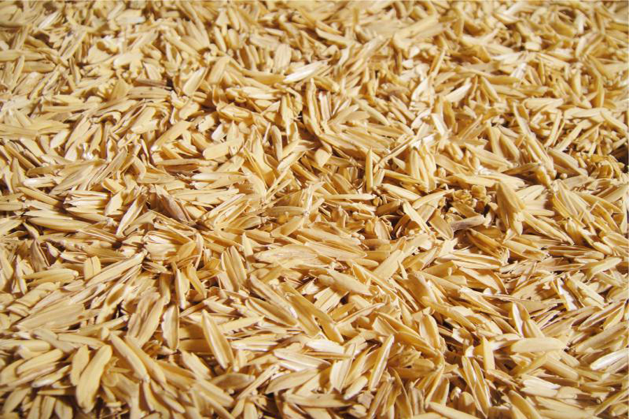
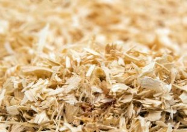

- 1-Kümes Konumu Ve Ortalama Kümes Boyutu
- Kümesleriniz nem almamalı kuru ve aydınlık olmalıdır.Hava alacak geniş yerlerin olması önemlidir.kolayca temizlik yapabilmeniz gerekir
- Bizde birer tavuk yetiştiricisi olarak kümesimizin konumuna dikkat etmekteyiz,Kümesinlerin yönünün Doğu ve Güney Doğuya bakması hayvanlarınız için daha sağlıklı olacaktır.
- Kümeslerde Genişlik Ve Yükseklik oldukça Önemlidir bizim tercihimiz kümesinizin yükseklik180cm,genişlik200cm olarak yapmanızı tavsiye ederiz(hayvan sayısına göre bu genişlik değişkenlik gösterir)
- 2-Kümes Ekipman Seçimi
- Kümeslerde ekipman seçimide oldukça önemlidir.Kümesinizdeki hayvanların çokluk ve azlığına göre ekipman alınmalıdır.
- Kümeslerde yemlik ve suluk kadar zemine konulan malzemede önem arz etmektedir zemine kavuz-kalaş gibi malzemeler de kullanılmaktadır
 
- 3-Kümes Güvenliği
- Kümesinizin güvenliği hayvanlarınız için oldukça önemlidir.Kümesinizde kullandığınız teller bunun bir parçasıdır ve kümesinizin malzemesi vs .dikkat etmeniz gerekir.Ortalama bir kümesin tel boyutları 12X12 100 cm (1 Metre kümesinizin yüksekliğine göre değişkenlik gösterir)olarak söylenebilir